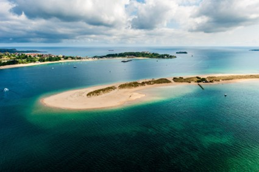
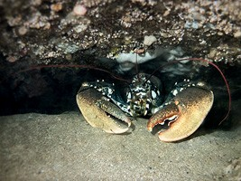
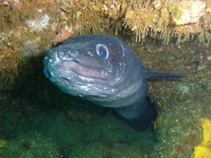
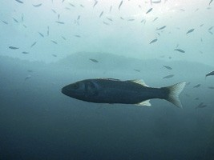
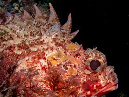
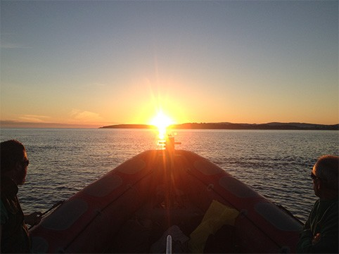

CANTABRIA
Isla de Mouro
Reserva natural con mas de 39 especies de peces.
EXPERIENCIAS MOUROSUB
Descubre los mejores spots de buceo de Cantabria. Cada inmersión es una aventura única.

Reserva natural con mas de 39 especies de peces.

Formaciones rocosas y vida marina abundante.

Escollera y fondos con gran diversidad.

Acantilados y inmersiones de nivel avanzado.

Formaciones subacuaticas de interes biologico.

Restos de barcos hundidos con historia.
Nuestras inmersiones están dirigidas por instructores certificados SSI. Todos los equipos están homologados y en perfecto estado de mantenimiento.